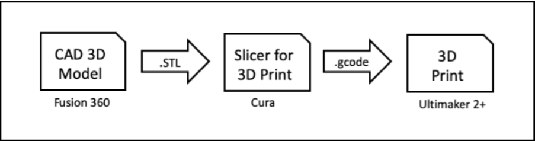

3D Printing
What is 3D Printing
3D printing is a manufacturing process that allows the creation of 3 dimension solid objects from a digital file through additive process.
Unlike subtractive process which involves the removal of material from a raw substrate block (e.g. milling, turning or routing), additive process creates an object by adding material in successive layers. Objects that cannot be created using subtractive methods because of holes and cavities within the object can be done using additive method in 3D Printing.
Here is a video which i've found useful for understanding the basics of 3D printing, enjoy!
Process of 3D Printing
1. We first model the 3D object using Fusion 360.
2. Using Fusion 360, we generate the STL ("Standard Tessellation Language") file which is a representation of the 3D object.
3. We use a Slicer program (CURA), configured for the 3D printer e.g Ultimaker 2+ to load the .STL file. The Slicer program, slices the 3D model into layers for printing. It also allows us to configure how we would like to print the object.
4. The Slicer program outputs the print job (.gcode) in a format that the 3D printer understands and prints it.
4 methods of creating 3D Objects
1. Extrusion of a 2D surface
2. Revolution of a closed profile about the axis
3. Creating a model using 3D shapes
4. Free-hand sculpting the model